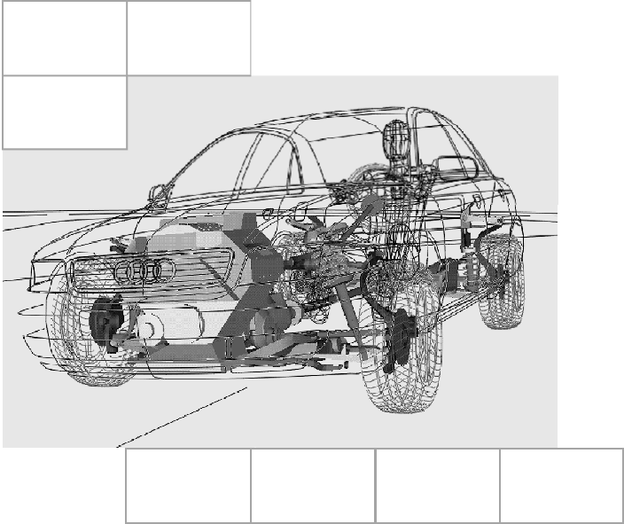
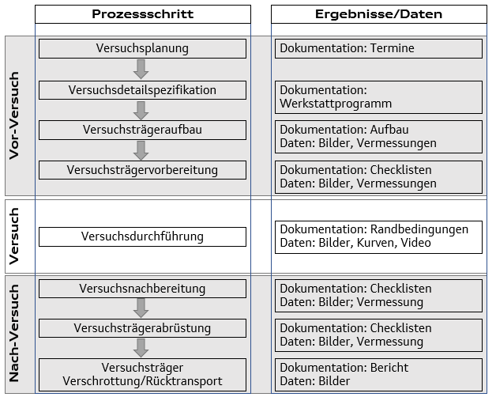
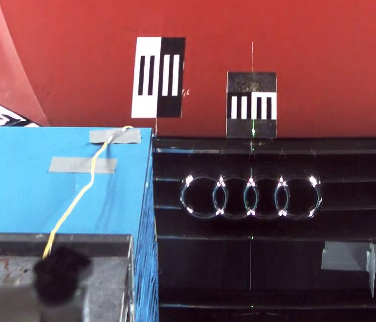
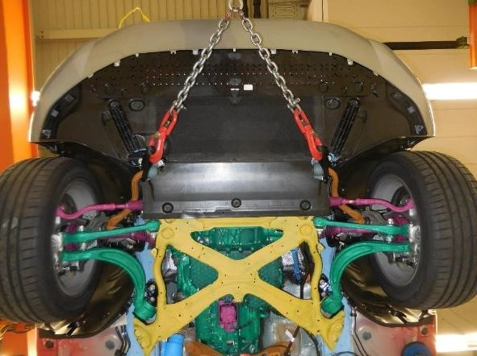
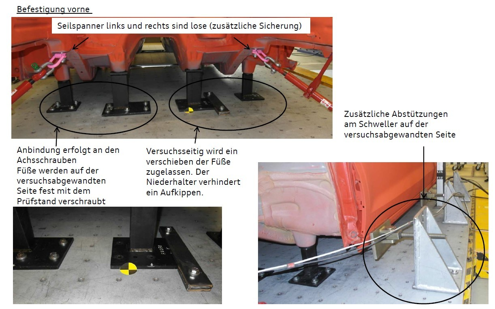
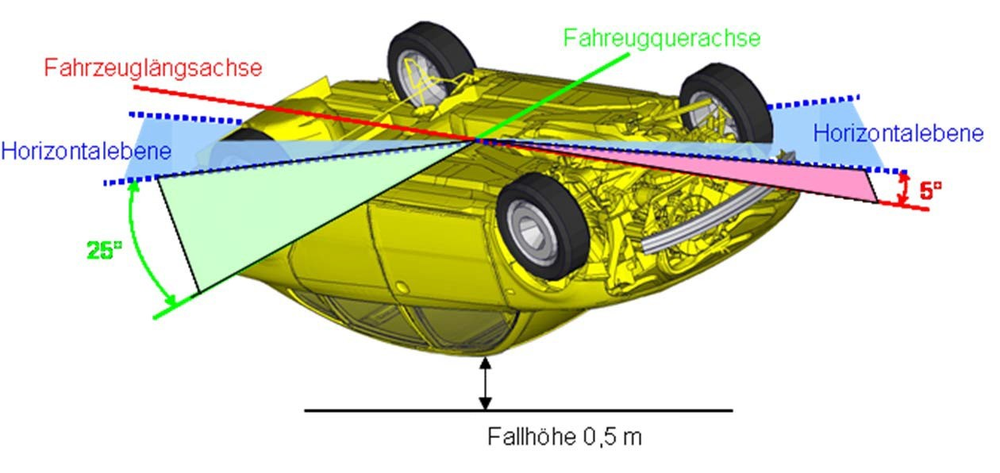
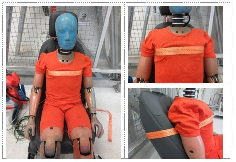

|
|---|
| [redacted-person] |
|
|
|
|
|
| [redacted-person] |
|
| [redacted-person] |
|
|
|
|

[redacted-person] for [redacted-person] Tests
([redacted-person], Sled, Out-of-Position,
and [redacted-person])LAH.[redacted-phone]J
|
|
|
|
|---|---|---|---|
|
|
[redacted-person] |
|
|
|
|---|---|---|
| [redacted-person] |
|
[redacted-person] |
| [redacted-person] |
|
[redacted-person] |
| [redacted-person] |
|
|
| [redacted-person] | [redacted-person] | [redacted-person] |
| [redacted-person] | [redacted-person] | [redacted-person] |
| [redacted-person] |
|
[redacted-person] |
| [redacted-person] |
|
[redacted-person] |
| [redacted-person] |
|
|
| [redacted-person] |
|
|
| [redacted-person] |
|
|
| [redacted-person] |
|
[redacted-person] |
| [redacted-person] |
|
[redacted-person] |
Contents
2.1 Definition of scope of development and supply 8
3.2 Prototype protection and confidentiality 11
3.3 Logistics and parts handling 11
3.5 General requirements for the test institute 13
3.6 Test preparation and post-processing 14
3.7 Test data and test report 16
3.8 Special requirements for individual test configurations 17
3.8.3 Pedestrian protection 21
3.8.5
Pressure tests for [redacted]
in open-top vehicles 23
3.8.7 Seat-belt and ISOFIX tensioning system 25
3.9 Documentation tests and release tests 28
3.10 Test facilities, test setups, and custom or in-house constructs 28
3.11 Temperature and humidity 28
3.12 Metrology instruments and measuring/test equipment 28
3.15 3D measurement systems 31
3.16 Moving barriers, impactors, and test objects 32
3.18 Crash test dummies and impactors 33
4.2 Data transmission and deadlines 37
4.4 [redacted-co] specifications concerning the MME structure 39
4.6 Photographic documentation 40
4.8 Vehicle measurement, crash test dummy measurement 41
5.1 [redacted-person] for [redacted-person] Providers 44
5.8 [redacted-person] Center 45
5.9 Vehicle VBV [redacted-person] 45
7.1 Technical specifications/standards 49
7.2 [redacted-person] for information 50
[redacted-person] Specification describes the technical requirements for carrying out tests for the [redacted-person] Development department of [redacted]
This document describes the relevant interfaces, processes, rights, and services requested.
In its quotation, the contractor must consider all services required for complying with the RFQ [redacted-person]. It is imperative that the quotation exclusively refer to the [redacted-person] and comprehensively present the manner of rendering the services required therein. Deviations from the [redacted-person] must be expressly identified as such in the quotation or in the ordering systems of [redacted]with reference to the respective section.
If the contract is awarded to the contractor, the latter must ensure that the services described in the [redacted-person] are provided to [redacted-co] as specified.
All aspects not described in sufficient detail herein and which need further clarification must be agreed upon with the purchaser's appropriate departments and need to be documented in a [redacted-person] or [redacted-person] Specification. This applies particularly to any deviations from standard requirements.
In addition to this [redacted-person], Volkswagen standard VW 99000 "[redacted-person] for the Performance of [redacted-person] Contracts" applies.
The content of the [redacted-person] and likewise, the documents additionally provided, are subject to confidentiality and may only be made accessible to third parties with the express consent of the responsible [redacted-co] department. Insofar as a transmission to third parties, in particular, to third parties affiliated with the contractor, is required for preparing a quotation and this was approved, the contractor must make certain that confidentiality is ensured.
The present [redacted-person] exclusively refers to services within the scope of project schedules. These can be, among other things, development, design engineering, numerical simulation, test bed, testing, workshop, and project management services.
The nature and scope of the services must be in conformity with the [redacted-person] unless circumstances are individually negotiated and explicitly regulated differently in writing.
The basis for test execution is the official protocols:
Laws
Note on [redacted]Standard (FMVSS): In addition to laws, the contents of the LABORATORY TEST PROCEDURE of the [redacted]Administration (NHTSA) must be observed
Consumer protection test
Note on [redacted]Program (Euro NCAP): In addition to the protocols, the contents of the Euro NCAP [redacted-person] must be observed
These documents are hereinafter referred to as "protocols."
Non-binding national and international standards must also be observed. Among others, these include:
[redacted-person] for Standardization (ISO):
ISO 6487 [redacted-person] in [redacted-person] – Instrumentation
ISO 8721 [redacted-person] – [redacted-person] in [redacted-person] – [redacted-person]ation
ISO/TS 13499 [redacted]for [redacted-person]
ISO/TS 22240 [redacted](VSIM)
ISO/IEC 17025 [redacted-person] for the Competence of Testing and [redacted-person]
ISO 19005 [redacted-person] – [redacted]for Long-[redacted-person]
Society of [redacted-person] (SAE):
SAE J211 Instrumentation for [redacted-person]
SAE J1733 [redacted-person] for [redacted-person] Testing
SAE J826 Devices for Use in Defining and [redacted]
[redacted-person] of the [redacted-person] (VDA)
VDA 304 Certification of H-Point and [redacted-person] Equipment and [redacted-person]
Unless otherwise specified in this [redacted-person] or in the protocols, the most recent version of the respective documents must be used.
The documents mentioned are only a selection and are by no means exhaustive. Further standards could be listed in the course of this document or in the protocols.
The contractor must independently source and apply all relevant documents in their current version. If reference is explicitly made to older versions of protocols, these must also be organized independently. The contractor bears any costs arising from this.
Any further specifications and parameters for test execution that are not specified in this [redacted-person] must be agreed upon with the purchaser before testing.
Attention is drawn to the requirement to comply with all laws, legal regulations, ordinances and requirements, accident-prevention regulations, and standards, etc.
A test is not considered fully complete until relevant data pertaining to the test has been submitted to [redacted-co] in full and without errors.
Document priorities
The following priority list applies in the event of conflicting requirements:
1. Official protocols (legislation, consumer protection)
2. [redacted-person]
[redacted-person] Specification
[redacted-person] Specifications
[redacted-person] Specifications that the purchaser has made available to the contractor
3. In-house technical standards ([redacted-person] Specifications [TL], [redacted-person] [PV], Volkswagen standards [VW], [redacted-person] [KR], [redacted-person] [QP]) and Formula Q – Concrete
4. Non-binding national and international standards (DIN, EN, ISO)
Technical documentation must be submitted as specified in VW 99000 as per the purchaser's instructions.
Documents
[redacted]Facility of [redacted-co] provides checklists, photo catalogs, and similar that are specific to [redacted-co]. Some examples are available as appendices to this document.
Databases
[redacted-co] provides access free of charge to databases for storing test data and descriptions. The contractor is responsible for correctly maintaining connections to these systems and must organize them well in advance. Note: If the connections have not yet been set up accordingly, the entire process including employee training is expected to take a period of at least three months.
Crash test equipment (metrology instruments, crash test dummy technology, and similar)
Unless otherwise further agreed in the contract award documents, the contracting party does not make any crash test equipment or similar available.
In the following exceptional cases, [redacted-co] supplies crash test equipment within Europe:
If the unavailability of crash test equipment puts the achievement of project objectives at risk, [redacted-co] can supply the crash test equipment. This happens only when the contractor can prove that it has exhausted all options for organizing the equipment elsewhere. In this event, this equipment is billed at market-rate prices plus a surcharge of 15%. In addition, the contractor must bear the transport costs including insurance and duties. The contractor must organize the insured transport.
If the appropriate [redacted-co] department deems that comparison tests with [redacted-co] internal crash test equipment (e.g., crash test dummies) are necessary
If the appropriate [redacted-co] department demands the use of crash test equipment that was not specified in any configuration in the RFQ documents at the time of contract award and is not available from the contractor or elsewhere
No entitlement to borrow can be construed. In particular, the internal demands of [redacted-co] have priority.
Vehicles and vehicle components
See the contract award documents.
Software
If necessary and if not available on the free market, [redacted-co] makes software available that is specific to [redacted-co], e.g., for programming and carrying out diagnostics on vehicle electrics/electronics. Use is permitted only in the context of the contracted scope of performance. If necessary and by agreement, [redacted-co] is able to provide training for the contractor's employees. The contractor must agree this in consultation with [redacted-co] early on.
The project specifications of VW 99000 apply, along with those described below.
For tests, the test schedule must be agreed upon with the purchaser at the outset. There must be opportunities for participation in the tests and for viewings during the setup and tear-down phases. In particular, the test configuration and test setups must be agreed upon with the purchaser at the outset.
The contractor has overall responsibility for meeting all requirements defined in the [redacted-person]. The contractor must perform and/or coordinate all services required to fulfill the scope of supply.
The installations of the contractor must have "prototype protection." Product security is an indispensable prerequisite to contract performance. Proof in the form of certified acceptance must be supplied (e.g., compliance with VDA standards as assessed by the TÜV; operational services GmbH & Co. KG, or equivalent).
The proof of acceptance must be in place no later than at the start of the project or upon receipt of an order from the contracting party.
For the transport of vehicles and components that are subject to the requirements of prototype protection, it must be ensured that prototype protection is guaranteed for the entire duration of transport and particularly during loading of the vehicle. For transport within Europe, a list of approved transport companies must be requested from [redacted-co] and only these transport companies may be used.
Note: If the installations have not yet been accepted accordingly, the entire process is expected to take a period of three to six months.
The terms and conditions agreed upon in the nomination contract apply to the provision of parts by the purchaser (e.g., dashboard scope, bodies-in-white, crash test vehicles).
The contractor is responsible for the timely call-off of parts supplied by the purchaser. The definition of "timely" must be agreed upon with the purchaser at the start of the project. Transport times must be taken into consideration in particular.
After the test has been carried out, the test components (vehicles, bodies, parts, etc.) must be stored for no additional charge. Storage must not result in changes to the material or condition. Prototype protection must be maintained.
Vehicles and bodies that are not being worked on must be covered with lockable tarpaulins. The contractor must provide these, unless otherwise specified in the RFQ documents.
Unless otherwise agreed in the RFQ documents, the contractor must provide special and approved storage and transport boxes for high-voltage (HV) batteries.
The time of disposal must be agreed upon with the purchaser. The following applies within this context:
Unless otherwise agreed, vehicles, bodies, and parts supplied by the purchaser or [redacted-co] must be returned by the contractor to the purchaser or [redacted-co] free of charge. The contractor must provide the transport packaging and containers free of charge.
Parts owned by the contractor that were made for the tests must be disposed of independently and free of charge by the contractor
Test setups owned by the contractor that were created to fulfill the contract must also be disposed of free of charge by the contractor
Transport costs must be included in the scopes of development and are not reimbursed separately by the purchaser. The same applies to disposal costs.
The following applies to parts disposed of by the contractor:
Proof must be supplied for all scrapped items
Local laws and regulations relating to disposal, environmental protection, and similar must be observed
Prototype protection must be ensured when parts are scrapped. If necessary, these parts must be made unrecognizable by deforming them or taking them apart. This particularly applies to components that offer a (partial) view of the vehicle, e.g., a complete dashboard, vehicle side panel, front or rear trim. In case of doubt, it is necessary to consult the purchaser.
All parts must be rendered unfit for reuse.
All proof must be unambiguously and fully documented in words, text, and images with the test number, [redacted-co] vehicle number or vehicle identification number (VIN), and part numbers. Where applicable, further requirements by [redacted-co] could follow in the course of contract performance. The proof must be surrendered at the request of the purchaser or [redacted]
Example: Multiple parts in one image with test no. and VIN, the way in which the part has been manipulated to prevent reuse must be clear to see (e.g., split rim flange, electronic control unit mechanically damaged beyond repair).
The contractor must disclose or develop a systematic process for scrapping/disposal by the contractor.
All reusable transport containers, frames, etc. owned by the Group must be returned to [redacted-co] free of charge.
For transport, storage, and work with hazardous substances and vehicles with alternative powertrains (compressed natural gas [CNG], electric, hydrogen, etc.) or components of these powertrains (batteries, pressure vessels, etc.), it is necessary to comply with locally applicable and legally required procedures and occupational safety regulations. The employees concerned must receive the appropriate training. For transport, the legally required procedures and occupational safety regulations applicable at the destination must also be observed.
For the use of parts containing pyrotechnics or comparable technologies (e.g., airbags), locally applicable and legally required procedures and occupational safety regulations must be observed. It must be ensured that employees with the appropriate skills to handle the components are available in sufficient numbers. Only these employees may carry out the work.
In addition, a complete register of the nature and quantity of this material must be maintained. This register must, in particular, document its origin and current location. This register must be stored for at least ten years.
For laboratories in [redacted-addr], the requirements of clause 7 of the [redacted-person] Act (SprengG) must be observed. In addition, it is necessary to provide proof of a sufficient number of employees possessing a certificate of competence as per clause 20 of the [redacted-person] Act available to handle pyrotechnic articles of categories P1 and P2 for technical purposes.
Part of conducting a test involves preparing and transferring data to the [redacted-person] department of [redacted]Without this, the test is not considered complete.
A data connection and establishment of faultless data transfer to [redacted-co] is a mandatory requirement. Sufficient time must be scheduled for setting up the connection. Based on experience, a minimum of three months can be assumed.
The contractor ensures provision and bears the costs for this. [redacted-co] provides the necessary system access. Only then is service provision possible.
It is not permissible to hand over data via the [redacted](KVS), a data storage device, or similar.
The contractor must designate a single point of contact to ensure the efficient clarification of all IT-related issues.
The complete fulfillment of the [redacted-person] also includes preparing the test data in the ISO-MME format specific to [redacted-co] and delivering the data independently and in full to the [redacted]systems (VisVerdi, Falcon). All relevant test data must be transferred to the specified [redacted-co] systems.
[redacted-co] provides help and support only in the form of the documents described. Any need for support beyond this must be purchased from an IT service provider.
The effort involved in preparing and transferring data is, from experience, very substantial and demanding. The contractor must, to the greatest possible extent, organize an automated process to prepare the data in the required format and import data into the [redacted-co] systems. To achieve this, measures and expenditure in the area of IT are required of the contractor. Experience shows that considerable effort can be expected with first-time implementation in particular. To be able to cope with the necessary effort as changes arise, continuous maintenance and updating are also a mandatory requirement during normal operation. Ordinarily, this cannot be handled by a development or test engineer. For this reason, it is advisable to have this taken care of by an IT expert. Manual preparation of the data is prone to errors and must be avoided. [redacted-co] does not accept any data that has not been prepared error-free.
The test laboratory must be certified at least to DIN EN ISO 9001 or ISO/TS 16949 or VDA 6.1 and to ISO/IEC 17025 for all relevant statutory load cases/type-approval testing. It must also be able to provide proof of commitments to the extent that release tests and self-certification procedures are carried out in these configurations. For whole-vehicle tests, ISO/IEC 17025 certification is required for the load case concerned. If ISO/IEC 17025 certification is not possible for a particular load case, this must be disclosed to the purchaser at the earliest opportunity and an agreement must be reached on how to proceed further, including the transfer of tests to a suitably certified laboratory.
In addition, the required expertise in vehicle preparation, crash test preparation, crash test execution, and vehicle evaluation to [redacted-co] standards must be available.

| Vor-Versuch | Pre-test |
|---|---|
| Versuch | Test |
| Nach-Versuch | Post-test |
| Prozessschritt | Process step |
| Versuchsplanung | Test planning |
| Versuchsdetailspezifikation | Test detail specification |
| Versuchsträgeraufbau | Test mule setup |
| Versuchsträgervorbereitung | Test mule preparation |
| Versuchsdurchführung | Test execution |
| Versuchsnachbearbeitung | Test post-processing |
| Versuchsträgerabrüstung | Test mule tear-down |
| [redacted-person]/Rücktransport | Test mule scrapping/return transport |
| Ergebnisse/Daten | Results/data |
| Dokumentation: Termine | Documentation: Schedules |
| Dokumentation: Werkstattprogramm | Documentation: Workshop program |
| Dokumentation: Aufbau | Documentation: Setup |
| Daten: Bilder, Vermessungen | Data: Images, measurements |
| Dokumentation: Checklisten | Documentation: Checklists |
| Daten: Bilder, Vermessungen | Data: Images, measurements |
| Dokumentation: Randbedingungen | Documentation: Boundary conditions |
| Daten: Bilder, Kurven, Video | Data: Images, charts, video |
| Dokumentation: Checklisten | Documentation: Checklists |
| Daten: Bilder, Vermessung | Data: Images, measurement |
| Dokumentation: Checklisten | Documentation: Checklists |
| Daten: Bilder, Vermessung | Data: Images, measurement |
| Dokumentation: Bericht | Documentation: Report |
| Daten: Bilder | Data: Images |
Figure: General process description
The following points must be taken into consideration:
Tests must be prepared and post-processed in such a way that maximum utility is achieved from the tests
If pre-tests have been carried out, the worthiness of the test must be evaluated and documented before the test is carried out. The contractor must consult the purchaser if the contractor is unable to guarantee fulfillment of this requirement
Before a test is carried out, all relevant setups must be documented by standard photo catalogs. These must be agreed upon with the purchaser before the test is carried out. If protocols contain requirements for photographic documentation, these must be considered as minimum requirements for the documentation.
After the test, the test result must be documented with as few changes as possible.
This must also be done using the standard photo catalogs provided by the purchaser. If none are supplied, these must be agreed upon with the purchaser before the test. In particular, no parts may be modified or removed before documentation has been produced. If protocols contain requirements for photographic documentation, these must be considered as minimum requirements for the documentation.
Before damaged parts are cut out or removed, it is necessary to consult the appropriate contact at the purchaser and make it possible for a viewing to take place
Remove the part or assembly as carefully as possible – disassembly before use of force.
Do not bend the part or damage fractured surfaces.
Removal, transportation, and storage of the part must be performed in such a way that no material or state changes are caused in the area to be examined for the analysis, taking into account the further surroundings of the damaged area.
The part must be checked for dimensional compliance with the applicable drawing. All scopes relevant to the test configuration must be assessed. (Note: The test scopes may vary between different projects and must be specified in detail with the appropriate department at the start of the commissioned service.) In a frontal impact, for example, the scopes comprise the following items:
Structure
Body including the relevant joining technology and design versions
Hang-on parts
Introduction of measures
Propulsion unit
Engine
Transmission
Exhaust system
Propeller shaft
Rear differential
Chassis
Front/rear subframe
Pedal cluster
Brake booster
Wheels
Fuel system
Fuel tank
Fuel lines
Fuel filter and similar
Fuel-fired parking heater including fuel lines
12-V vehicle electrical system
Battery or energy storage system
Cables
Electronic control units/networked safety functions
HV or medium-voltage (MV) vehicle electrical system
Energy storage system
Cables
Electronic control units/networked safety functions
Heating, ventilation, and air conditioning (HVAC) system
Vehicle interior
Cockpit
Center console
Seat
Carpet/footwell
Wheel housing liner components
Roof/sun visor
Interior pillar trims
A test report must be prepared for each test. In the tests themselves, all scopes relevant to testing must be documented in the form of a test report and, where possible, in VisVerdi. The details must be defined with the purchaser at the start of the project and continuously refined.
Before the test is conducted, the associated VisVerdi program must be created, the [redacted-co] test number must be noted in the documents, and entered before and after the test. In addition to the minimum entries described in section 4, the relevant test results must also be documented in the VisVerdi program. To support this, the purchaser may generate a VisVerdi "user view" containing, for example, the following points: Part numbers of the restraints; actual crash weight; actual speed; fuel leak-tightness, etc.
The following points must be taken into consideration and included in the test report and submitted documents:
Preparation and evaluation of the protocol-relevant boundary test conditions, measurement data, and results as PDF/A as per ISO 19005
Measurement data in ISO-MME format as per ISO/TS 13499
Vehicle or body description of the setup (body-in-white, trim panels, airbags in their individual parts, etc.) by means of test program in VisVerdi and photos in Falcon
Vehicle, positioning, and crash test dummy measurement in compatible formats
Videos and photos in Falcon in the formats and resolutions defined by [redacted]
Internal test number of [redacted-co] and the laboratory
Calibration certificates of the test facilities and metrology instruments used
Certification reports of the crash test dummies/impactors/barriers involved
Description of the test setup including photos. At the purchaser's request, these must also be supplied in the form of computer-aided design (CAD) drawings
Part numbers and versions of all relevant vehicle components involved in the test
Incorporation of the parts based on a checklist to be defined
Recording of vehicle values (door opening force, etc.) as per [redacted-co] checklist
Event memory read-out before and after test
For release tests, a release recommendation must be prepared and, if necessary, completed
For details of the respective data formats and special requirements, see section 4. The requirements specified there must be strictly observed.
The test report must contain at least the following points:
Test content and objective
General boundary conditions (date, contact, location, etc.)
Documentation specific to the test object (VIN, pre-tests, conversions, weight, etc.)
Boundary conditions specific to the test (speed, impact point, temperature, humidity, etc.)
All relevant information pertaining to the respective test record
All irregularities documented in writing and by photos, e.g., failure/damage/collapse of parts and behavior of parts, e.g., propulsion units (engine, transmission, exhaust system, etc.) and chassis (subframe, control arms, brake booster, etc.)
Fuel and media leak-tightness, electrical safety
Comparison with pre-tests and/or simulations
Occupant loads
Result, summary, comparison with [redacted-person] requirements, and recommendations for measures
Prospect of next test
For HV vehicles: Battery analysis report
For whole-vehicle tests, the following points must be taken into consideration:
Reproducibility of propulsion ±0.2 km/h
Legal nominal values -0 km/h to +0.4 km/h are permissible.
Use of a calibrated speed measuring system
The acceleration rates on the run-up track specified in the protocols for vehicles with occupants must be observed. Unless otherwise specified, an acceleration rate of 0.5 m/s2 must not be exceeded. The acceleration curve of the vehicle or mobile barrier from a standstill to the point of contact must be documented and stored in Falcon
The required speed must, unless otherwise specified, be reached 5 m before contact and a constant speed must be maintained up to the point of impact
The vehicle or mobile barrier must be decoupled before the point of impact
The following impactor suppliers must be used. The use of other suppliers requires the authorization of the purchaser.
ECE R94 frontal EEVC Cellbond
FMVSS 214 side Plascore
EEVC side (WG13) (Advanced 2000) Cellbond
AE-MDB [redacted-person] Cellbond
IIHS side Cellbond
Rear impact ODB 70% Plascore
After the test, the test checklists of [redacted-co] must be completed and transferred to VisVerdi. Example checklists for frontal, side, and rear impacts are appended to this [redacted-person]
In particular, it must be noted that the opening forces of locks and doors must be measured and documented for all doors in all tests
The standard vehicle measuring points agreed in the [redacted-person] must be fitted. Details can be found in the appendix or must be agreed upon with the purchaser in good time before the first test.
The impact point and deviation therefrom must be determined by suitable means and documented in VisVerdi. How this is determined must be agreed upon with the purchaser before the test is carried out.
Frontal impact: The center position of the vehicle and, in offset tests, the target position of the side edge of the barriers must be marked using piano-key stickers. Using a pointer, a calibrated line in the test video, a line laser, or equivalent, the deviation from the impact point must be made visible and the deviation must be documented in VisVerdi

Rear impact: As for frontal impact
Side impact:
Barrier impacts only: Documentation of the target position of the barrier before the test: The barrier must be positioned against the vehicle. A distinctive dot must be projected onto the vehicle from the outermost left and right sides of the barrier, respectively, and marked accordingly. These two dots must be measured using a 3D measurement system and documented in VisVerdi
All tests: Documentation of the actual impact position: Impact circle on the door panel. It must be ensured that this does not alter the test results. The deviation must be documented in VisVerdi
All tests: The impact angle must be documented by suitable means and it must be proven that the specified tolerances of the impact angle are maintained. This must be done, for example, using a video analysis. The study must be presented to the purchaser or [redacted-co] on request
Friction coefficients of the test surface: Fulfillment of FMVSS [redacted-phone]requirements for vehicle test surfaces, "lateral moving barrier crash test conditions" and "rollover test conditions", on a dry surface at a speed of approximately 65 km/h (= 40 mph), a skid number of 75 as per ASTM E [redacted-phone] This can also be replaced by the skid resistance test (SRT) value of > 15 and < 45 defined by the commonly used standard in Europe (DIN EN 13036-4).
Pole side impacts (e.g., as per FMVSS 214 or UNECE R135) must be carried out with a flying floor. If a different method is used, proof of equivalence to the flying floor (impact point, impact angle, speed) must be presented to the purchaser
In the frontal impact test, the towing device must be connected to the vehicle by flexible connections (e.g., webbing) on the stabilizer bar of the chassis. Alternative connections may be used after consultation with and approval by [redacted]A connection requiring modifications to the vehicle is not permitted

Tanks must be filled as per the specifications of the respective protocol (filling medium, volume). If nothing is specified there in this respect, it is necessary to consult the purchaser and:
Dyed water must be used
A volume equivalence must be used, not weight equivalence
After each crash, the fuel system, i.e., lines and tank, must be separately tested under pressure, checked for leaks, and documented
Unless otherwise specified by a particular protocol, it is possible to use braking or acceleration systems in equal measure.
General requirements:
The requirements of the respective protocols must be met.
The following general requirements must be met:
Max. speed: 70 km/h
Change in deceleration or acceleration (approximate value): 15 g/ms
Min. deceleration or acceleration distances
Vehicles with combustion engine: 1.6 m
Vehicles without combustion engine: 2.0 m
A payload capacity of 3 500 kg must be supported
The sled body must be pivotable through ± 20° to the left and right for frontal impact tests
Bodies for restraint system development must be reinforced in such a way that the behavior of the body and, in particular, the connection of seats, seat belts, and other high-load connection points remain stable throughout the entire duration of use
The following measuring instruments must be fitted:
Three-axis acceleration sensor for sled acceleration
Position front or rear center
Redundancy for three-axis acceleration sensor, sled deceleration
For assemblies with body: Three-axis acceleration sensor on the sill side at the B-pillar bottom left and right, respectively
Pulse accuracy:
Unless the protocols specify otherwise in respect of pulse accuracy, the test pulse must be checked based on speed.
The following procedure must be applied:
Determine the average value from the sled acceleration and its redundant sensor
Calculate the speed through integration
Do the same for the specified pulse
Set the initial speed to 0 m/s
Do the same for the specified pulse
Calculate the difference between the specification and the test
The result must be in the corridor -0.8 m/s to 0.8 m/s
Sled tests for restraint system development
For sled tests for restraint system development, it must be possible to deploy all restraint systems and use up to five fully instrumented crash test dummies including the necessary metrology instruments (e.g., seat belt forces, steering column forces)
The requirements for carrying out the test are specified in the official protocols. In particular, it must be noted that the following equipment is needed to carry out the test:
All relevant impactors
Metrology instrument recording:
Sampling time of min. -200 [redacted-person] +500 [redacted-person].
When the impact speed of the impactor is being determined by the acceleration sensor fitted in the impactor, the entire acceleration phase of the impactor must be recorded.
2x camera with 1 000 fps and a resolution of 1 280 x 1 080 (see also section 3.13)
Recording times: Headform test -20 [redacted-person] +100 ms
Lower legform/upper legform -100 [redacted-person] +100 ms
Tread load tests of re-active hood: -100 [redacted-person] +300 ms
3D measurement system for measuring the impact points as per the protocol/[redacted-person]
Calibrated speed measuring system
Photographic documentation:
Photographic documentation as per Euro NCAP [redacted-person] Protocol, section 8.4 "Photographic record."
Further photographic documentation of different parts and damage by agreement with the purchaser
Speed tolerances of the impactors at the time of impact (t = 0 ms):
Headform impactors:
Impact speed ± 0.2 km/h relative to specified speed.
For deviations between 0.2 and 0.4 km/h: Duty to inform the purchaser.
For deviations exceeding 0.4 km/h: Duty to inform the purchaser, and the cause must be rectified before the test is resumed
Lower legform impactors (FlexPLI, aPLI):
Impact speed ± 0.35 km/h relative to specified speed.
For deviations between 0.35 and 0.55 km/h: Duty to inform the purchaser.
For deviations exceeding 0.55 km/h: Duty to inform the purchaser, and the cause must be rectified before the test is resumed
For tests with the advanced pedestrian legform impactor (aPLI), there are currently no officially specified boundary conditions for carrying out the test. Until the relevant documents are published, the same boundary conditions apply as in the current Euro NCAP protocol for tests with the flexible pedestrian legform impactor (FlexPLI).
Misuse and impactor tests for sensor system development:
Impact speed ± 0.2m/s relative to the specified speed for stationary tests on the test bed/ catapult.
For deviations exceeding ± 0.2 ms: Duty to inform the purchaser
Upper legform impactors:
Impact speed ± 1% relative to specified speed.
For deviations between 1% and 2%: Duty to inform the purchaser.
For deviations exceeding 0.55 km/h: Duty to inform the purchaser, and the cause must be rectified before the test is resumed.
Furthermore:
For vehicles with active pedestrian protection systems, all vehicle-internal signals of the sensor systems and electronic control units must be recorded. In this case, a remaining-bus simulation is also necessary. Technical requirements must be agreed upon with the purchaser.
Proof of impact point must be produced and documented. This must be done by suitable means (e.g., target sticker + color marking). The permissible deviation is specified in the protocols. If nothing is specified there in this respect, a deviation of max. 5 mm is permissible
The impact angle must be proven and documented by suitable means.
This can be done, for example, by means of a video analysis in combination with solder and markings on the impactor
The waiting time between two tests with the same impactor must meet the requirements in the protocols. If no requirements are specified there in this respect, the time frame must be agreed upon with the purchaser.
The requirements for carrying out the test are specified in the official protocols. Unless otherwise agreed, the test speed is 5 mm/s.
At variance with the requirements of FMVSS 216, the body may be supported as per the requirements of the IIHS protocol. This must be agreed upon on a case-by-case basis with the purchaser.
All events during the test must be recorded at the time they occur and documented (e.g., rear window breakage, etc.).
In particular, it must be noted that the following equipment is needed to carry out the test:
3x camera with 25 fps and a resolution of 1 980 x 1 080 (see also section 3.13)
SAE test manikin for adjusting the seat position
Test headform or Hybrid III (HIII) 50% crash test dummy
3D measurement system for measuring the test headform/crash test dummy (see also section 3.15)
Axial force and displacement measurement of the test system
3x draw-wire potentiometers for documenting the connection of the vehicle/body to the substructure/clamping floor
1x sill, horizontal
Front center and rear vertical platform
Test execution: Rest-of-the-world (ROW)
The roof crush test must be carried out on one side.
The roof crush test must be carried out with a post travel of up to 200 mm. At 127 mm post travel, the test must be interrupted and the deformation profile must be documented by photos.
Test execution: [redacted-person] Region (NAR)/FMVSS 216a
The roof crush test must be carried out on both sides.
On the first side, the test must be stopped when the specified force is reached.
On the second side, the test must be carried out up to the specified force. The deformation profile must be documented.
The test is then carried out up to a post travel of 200 mm. The head contact must be documented during the test.
Test execution: IIHS
The roof crush test must be carried out on one side.
The test must be carried out with a post travel of up to 200 mm.
The requirements for testing [redacted]comprise static compression and tensile tests as well as dynamic sled tests.
Compression tests:
As per FMVSS 216
Y-direction
Z-direction (two positions)
Tensile tests:
X-direction (two positions)
Z-direction (two positions)
Dynamic sled tests
Complete rollover protection structure against rigid wall (two positions) at 10–11 km/h
The details must be agreed upon on a case-by-case basis with the purchaser.
The requirements for carrying out the test are specified in the official protocols.
The vehicle must be connected to the substructure by the connection points of the axles. The connections on the test side must not be anchored in the floor, but only secured to prevent tipping. On the side facing away from the test, the connections must be securely bolted down. Outside these points, only supports at the sill on the side facing away from the test are permissible.

| Befestigung vorne | Front fastening |
|---|---|
| Seilspanner links und rechts sind lose (zusätzliche Sicherung) | Cable tensioners on the left and right are loose (additional securing) |
| Anbindung erfolgt an den Achsschrauben | Connection is to the axle bolts |
| Füße werden auf der versuchsabgewandten Seite fest mit dem Prüfstand verschraubt | On the side facing away from the test, the feet are securely bolted down onto the test bed |
| Versuchsseitig wird ein Verschieben der Füße zugelassen. | On the test side, sliding of the feet is permissible. |
| [redacted-person] verhindert ein Aufkippen. | The tie-down plate prevents tipping. |
| [redacted-person] am Schweller auf der versuchsabgewandten Seite | Additional supports at the sill on the side facing away from the test |
In addition, the following equipment must be used:
3x camera with 24 fps and a resolution of 1 920 x 1 080 (see also section 3.13)
Axial force and displacement measurement of the test system
1x draw-wire potentiometer for documenting the connection of the vehicle/body to the substructure/clamping floor
1x sill, horizontal
The requirements to be observed are specified in [redacted]LAH.[redacted-phone]B and in the applicable project-relevant [redacted-person] Specifications. This generally means:
Front seat: LAH.???.881
Rear seat: LAH.???.885
Where ??? must be replaced with the relevant project code.
In particular, it must be noted that the following equipment is needed to carry out the test:
1x camera with 25 fps and a resolution of 1 980 x 1 080 (see also section 3.13)
The test is carried out based on SAE J996
The drop height is 500 mm.

| Fahrzeuglängsachse | Vehicle longitudinal axis |
|---|---|
| Fahrzeugquerachse | Vehicle transverse axis |
| Horizontalebene | Horizontal plane |
| Fallhöhe 0,5 m | Drop height 0.5 m |
In addition, it must be noted that the following equipment is needed for carrying out the test:
2x onboard camera and 4x offboard camera with 1 000 fps and a resolution of 1 920 x 1 080 (see also section 3.13)
Metrology instruments:
5x three-axis acceleration sensor
1x three-axis yaw rate sensor
The positions of the measuring points must be agreed upon with the purchaser before the first test is carried out.
At the A-pillar, which is the first to come into contact with the measuring plate, the following deformation paths must be recorded over time:
In Z-direction (vehicle axis system)
In Z-direction (gravity direction)
At the B-pillar (loading side), the following deformation paths must be recorded over time:
In Z-direction (vehicle axis system)
In Z-direction (gravity direction)
Force measurement at the impact plate (at least four sensors in Z-direction)
The requirements for carrying out the test are specified in the official protocols.
Ramp test
One side of the vehicle is sent over a ramp. Variables in these tests are the ramp height and length (i.e., the ramp gradient) and the approach speed of the vehicle.
Ditch test
The vehicle is sent over a natural or artificial ditch. Variables here are the slope of the ditch, the approach angle and speed of the vehicle, the ditch material (coefficient of friction), and the steering movement. Steering movements (uphill or downhill) are used to influence the probability of a rollover.
If an artificial ditch must be used, it must be demonstrated that the influence of the steering movement on the rollover behavior is comparable to that occurring in the natural ditch.
The ditch test maneuver encompasses the entire period of time that elapses from the vehicle's approach to the vehicle's coming to a standstill at the end of the ditch. In this maneuver, experience shows that most rollovers occur during the transition from the ditch to the flat. This transition must also be assessed. Rollovers caused by entrenchment and skidding on the ditch are also part of this maneuver.
Soil trip
The vehicle slides sideways into a bed of sand. The speed in the Y-direction and the material in the sand bed can be varied.
Rollover as per FMVSS 208
A lateral rollover of a vehicle must be replicated in the test as per the test conditions of FMVSS 208 and the corresponding test procedure in order to study the roof structure, restraint systems, and occupant kinematics.
Corkscrew rollover as per AMS/ADAC
A corkscrew rollover must be carried out as per the requirements of the German automobile club (ADAC) in order to study the roof structure, restraint systems, and occupant kinematics.
In all scenarios, the reproducibility and presentability of the results by simulation is particularly important. For this reason, inconsistencies in the test with regard to differences in test facilities, boundary conditions, ground qualities, etc., must be avoided.
The exact test configurations must be agreed upon with the purchaser before each test cycle.
The following must be observed in respect of test execution:
Adapt the vehicle weight and weight distribution.
Determine the vehicle center of gravity and the static tipping angle of the fully prepared vehicle (including crash test dummy and final test weight).
Equip the vehicle with automatic steering to control the steering angle during the ditch tests. It must be possible to issue a steering movement as a time-relative input.
Repair work between the tests
Static measurement: Axle deflection levels, steering ratio
HIII 50% crash test dummy not instrumented, certification of neck and adjustment of joints as per 49 CFR Part 572 – Subpart E.
Crash test dummy wearing a seat belt and additionally secured to the backrest at chest height by a securing strap:

In addition, it must be noted that the following equipment is needed for carrying out the test:
Cameras:
Static digital cameras (min. 500 fps)
2x onboard digital camera (min. 500 fps)
Sensors: Maximum of 20 acceleration, 2 compression, 10 tension, and up to 2 three-axis yaw rate sensors in accessible locations with the greatest possible protection against damage.
Recording of internal signals of the airbag electronic control unit or safety computer and bus messages: CAN/FlexRay signals.
Deployment signals: Deployment point recording and/or timer deployment of restraint system components by agreement with the appropriate department.
In release tests, the contractor is responsible for carrying out and documenting the tests as per the protocols. In particular, the contractor must inform the purchaser if its specifications contradict this requirement or if deviations from the specifications arose when the test was carried out.
The contractor must, under its own responsibility, ensure that all information necessary for complete documentation is documented even if this has not been explicitly demanded by the purchaser in individual cases. If anything about the content of the documentation is unclear, the contractor must, under its own responsibility, consult the purchaser for clarification before the test is carried out.
In addition, all necessary calibration and certification documents must be stored in Falcon with clear file names in PDF/A format as per ISO 19005.
Descriptive information relating to test facilities, test setups, and custom or in-house constructs must be handed over at the purchaser's request. This includes, for example, information concerning the manufacturer, age, maintenance documentation, detailed build design, and stiffness.
The calibration of sensors for temperature and relative humidity must not be older than a maximum of 365 days. The measuring ranges must be adequately dimensioned for the test being carried out.
The temperature and relative humidity inside the test facility must be measured at a central and well-ventilated point close to the test location. For test facilities in which the start point (e.g., a climatic chamber) and the test point are further than 15 m apart from each other, or if the temperature differs between these points, appropriate sensors must be fitted in both areas and documented.
In the test and start areas, the time frames and corridors specified in the official protocols for the test temperatures must be maintained. If nothing is defined there in this respect, these must be agreed upon with the purchaser before the test is carried out.
It must be ensured that all test components have spent a sufficiently long time in the climate-controlled area before the tests and have been able to reach ambient temperature. The acclimation period must be declared at the request of the purchaser.
The temperatures of the test facility and of any crash test dummies and impactors must be individually documented.
Only the use of metrology instruments and measuring/test equipment that were calibrated no more than 365 days ago is permitted. The measuring ranges must be adequately dimensioned for the test being carried out. In particular, this applies to all measuring equipment that documents values relevant to legal requirements and consumer protection standards. These include (for example):
Measuring points of crash test dummies and impactors
Accelerations, force, moment, displacement, yaw rate
Accelerations of test beds or vehicle
Force transducers for test beds
Displacement sensors for test beds
Speed measurements
Balances
Air/tire pressure gages
Torque wrenches
Temperature and humidity gages
Length measurements, e.g., for axle deflection levels, tape measurement of crash test dummies, impact point deviations
Angle measurements, e.g., for seat or steering wheel positions
A list of the sensors used must be enclosed as a PDF/A file with each test. This must contain at least the following information:
Unique measuring point ID
Measuring point description/name
Measuring point type
Date of last calibration
Channel name in the test setup (if present)
It is generally the case that, for each whole-vehicle test, the minimum scope of measuring points (standard measuring points) is applied automatically in the VisVerdi program for the respective load case. It is a mandatory requirement to use these at a minimum. Additional measuring points specific to the load case could always be needed. For this reason, the purchaser must be consulted before the start of the crash test phase to determine which additional sensors are necessary in the respective load cases.
It must be noted that the CAN bus and, in the case of an HV vehicle, the HV measuring points (accelerations/voltages/temperatures, etc.) must also be measured in the process. The de-energization curves of the 12-V, 48-V, and HV batteries, if present in the project, must also be recorded. The pulse-width-modulation (PWM) signals of the fuel pump cut-out must be documented in tests with a running engine.
It must also be ensured that all measuring points relevant to the crash sensor system are fitted and measured in the crash.
Acceleration sensors:
The acceleration sensors must be secured in such a way that the entire signal bandwidth can be transferred and no signal-damping effects occur, unless this is explicitly agreed upon with the purchaser or specified by the protocols. Approximate values are given in the setup documentation, or they can be requested from the [redacted]of [redacted]If bonded connections are required, a suitable adhesive must be used to prevent the measuring points from becoming detached. This could, for example, be swift therm 9054. Adhesive tape must be applied if necessary to additionally secure the measuring points. Attachment by double-sided adhesive tape alone is not permissible.
Calibration must be carried out with standards that can be traced back to national or international standards or internationally recognized procedures or standards. They must be in accordance with standards DIN EN ISO 9000ff., DIN ISO 10012, and DIN EN 45001.
If the sensor is used in a release test, calibration must be carried out in a calibration laboratory accredited to ISO/IEC 17025 for these measurands. This particularly applies to measurands required in type approvals and self-certifications (e.g., FMVSS 208). If an appropriate laboratory is not known, the purchaser must be consulted before the test is carried out and agreement must be reached on how to proceed further.
All dynamic sensors and data recording devices used in the test must meet the requirements of SAE J211/1 and ISO 6487.
The contractor must keep the calibration documents for at least five years and present them at the purchaser's request. For release tests, the documents must always be imported into the database systems of [redacted]
All calibration certificates must contain at least the following information:
A title (e.g., "Test report" or "Calibration certificate")
Name and address of the laboratory and location at which the calibrations were carried out
Unique identifier of the calibration certificate (number); page numbering
Name and address of the customer
Statement of the calibration method used
Description/unique identifier of the calibration item
Date of calibration (if applicable, date when the sensor was received in the calibration laboratory)
Calibration results (with units)
Name(s), position, and signature(s) of the authorizing person(s)
Ambient conditions of the calibration
Declaration of measurement uncertainty
General statement on the metrological traceability of the measurement results to national standards as per DIN EN ISO 17025 (certificate of traceability as per DIN EN ISO 9001 is not sufficient).
Seat-belt force transducers
The seat-belt force transducers used must be calibrated as per ISO/TS 17242. Instead of the standardized seat belt, it is also possible to use an [redacted-co] seat belt. A linear calibration may be carried out only if it is proven that the non-linearity is less than 1%. Otherwise, the polynomial calibration must be used.
Speed measurement
Speeds must be measured directly by an appropriate system. The speed measuring system must have an accuracy of < 0.1%. The speed must be measured as close as possible to the contact point.
It is permissible to determine speeds by integrating acceleration sensors only when the correctness of this procedure could be proven by comparison measurements with the speed measuring systems. This proof must be obtained at least once a year and after every calibration of the acceleration measuring point.
Images must be taken as per the photo catalog at a minimum. Special characteristics/irregularities must also be recorded in the image.
Cameras must have a minimum resolution of 1 920 x 1 080, regardless of whether they are used onboard or offboard. In dynamic tests, this must be achieved at 1 000 fps.
In airbag static deployment tests, a frame rate of 2 000 fps at a minimum resolution of 1 280 x 1 024 must be achieved.
Deviations from this requirement must be agreed upon with the purchaser by contract award at the latest. All videos must be recorded in color.
The recording area must be agreed upon with the purchaser before the first test. It must be ensured that all relevant test results have been documented.
Adequate lighting must be ensured. For onboard cameras, in addition to the exterior lighting, adequate lighting must also be installed inside the vehicle.
The requirements for image detail and the names of the videos are specified in VisVerdi and must be observed. In addition to these requirements, detailed information, particularly with respect to standard cameras, is specified in the [redacted-person] video catalog and must be observed. If there are no specifications in VisVerdi or in a video catalog, the image detail and names must be agreed upon with the purchaser before the first test is carried out. The
use of special positions for cameras as standard positions must be avoided. In this case, a standard name must be agreed upon with [redacted]
The videos must record in synchrony with the metrology instruments.
In the video, the test number and a progress timer must be shown. Please observe the requirement in respect of the video codecs. See section 4.7.
Video evaluation
The requirements for video evaluation are specified in [redacted-person]
LAH.DUM.880.BE
Vehicle measurement
A vehicle measurement requires the use of a 3D measurement system which can be used to measure the necessary points and lines in the vehicle axis system (as per vehicle design system). Each individual point must have a proven accuracy of < ± 0.5 mm, depending on the 3D measurement system used.
The necessary measurement variants to be implemented differ by crash type (frontal, rear, side impact). For the frontal impact, they also differ by crash speed and project.
An example measurement catalog is appended to this [redacted-person].
Which measurement is required for the respective load cases must be agreed upon with the purchaser and documented before the whole-vehicle tests. The measurement catalog is specific to the project. After contract award, it must be agreed whether the purchaser or contractor creates the photo catalog. In cases where development and test scopes are awarded in full, it is the contractor who must create the photo catalog and this must be discussed with, and approved by, the purchaser before the first tests are carried out. Afterwards, the photo catalog must be surrendered to the purchaser for archiving.
In addition, the contractor must check that, in VisVerdi, the purchaser has carried out the necessary configurations for importing the measurement data.
Crash test dummy and impactor measurement
A 3D measurement system is required for documenting the crash test dummy position in whole-vehicle, sled, and component tests. The crash test dummy position is measured and documented in reference to the vehicle axis system. Each individual point must have a proven accuracy of < ± 0.5 mm, depending on the 3D measurement system used.
The current measurement catalogs of [redacted-co] must be used, respectively.
The measurement must be carried out in the start position of the test and within max. 30 minutes before the test. The crash test dummy and seat belt must not be altered or moved at any time after the measurement. In particular, the vehicle must not be transported to a different position.
An example measurement catalog for frontal impact protection is appended to this [redacted-person].
Surface measurement
A surface measurement must be carried out in consultation with the purchaser for the respective measurement variants of the respective object of measurement. The surface measurement system used must have a proven length measurement deviation accuracy of < ± 0.1 mm.
It must be noted that, in some load cases, the impactor must also be measured. For example, 3D scan in the side impact or 3D scan in the frontal impact with mobile progressive deformable barrier (mPDB)
Document storage
The requirement for storage and documentation of the vehicle measurement, crash test dummy measurement, and surface measurement carried out is specified in section 4.8 and must be met.
Calibration and traceability
The calibration of the systems must not be older than a maximum of 365 days. Proof of traceability for the surface measurement systems must be provided as per VDI/VDE guideline 2634 and the DIN EN ISO 9000ff. series of standards.
The proof of traceability for the coordinate measuring machines must be provided as per DIN EN ISO 10360.
Only the use of moving barriers and test objects having a valid certificate/calibration record is permitted. The calibration must be renewed after every conversion, modification, instance of damage, or repair and must be inspected regularly. Moving barriers must be calibrated after no more than five years. All other devices must be calibrated at least once a year. A visual inspection must be carried out before each use, particularly before each documentation or release test.
Only the use of impactors having a valid certification is permitted. Any requirements in respect of suppliers must be observed.
For documentation and release tests, the documents must be stored in Falcon in PDF/A format.
H-point manikins complying with
SAE J826 Devices for Use in Defining and [redacted]
must be used. The stricter requirements of
VDA 304 Certification of H-Point and [redacted-person] Equipment and [redacted-person]
must be observed, particularly in respect of whiplash. The calibration must be carried out at least every two years.
Instrumentation and setup
Crash test dummies used in tests subject to USA regulations must conform to 49CFR Part 572. [redacted-person], they must conform to UNECE regulations/EC directives. For consumer protection tests, they must conform to the current version of the relevant test procedures for the load case concerned (Euro NCAP, IIHS, US NCAP, etc.).
For HIII 5%, the requirement of SAE J2915 H-III5F [redacted-person] Update to [redacted-person] must additionally be applied. If this is not possible, the parts concerned must be checked and readjusted before each test, and this must be documented in writing.
In addition to the sensors specified in the protocols, the following equipment scopes must be used at a minimum:
Frontal impact protection:
Three-axis acceleration sensors:
Head, chest, and pelvis
Three-axis yaw rate sensors:
Head
At the purchaser's request: Chest and pelvis
Forces and moments of upper neck
Standard rib cage displacement measurement
Iliac moment and force for HIII 5% and [redacted-person] for [redacted-person] Restraint (THOR) 50%
Measurable legs (femur, knee slider, upper and lower tibia)
Side impact protection:
Three-axis acceleration sensors:
Head, chest, and pelvis
Three-axis yaw rate sensors:
Head
At the purchaser's request: Chest and pelvis
Forces and moments of upper neck
Standard rib cage displacement measurement
Three-axis shoulder force sensors on impact side
Additionally for WorldSID
Measurable sacroiliac (six-axis) on impact side
Rear impact protection and child safety:
Three-axis acceleration sensors:
Head, chest, and pelvis
Three-axis yaw rate sensors:
Head
At the purchaser's request: Chest and pelvis
Forces and moments of upper neck
Standard rib cage displacement measurement
Iliac moment and force for HIII 5% and THOR 50%
Out-of-position (OoP) (front and side)
No requirements beyond those of the protocols
Pedestrian protection
No requirements beyond those of the protocols
Head impact
No requirements beyond those of the protocols
Temperature
The crash test dummy temperatures must be measured and documented. Temperature sensors must be fitted as per the current version of ISO/TR 27957. If no requirement is specified there in this respect, it is necessary to consult the [redacted]of [redacted]The crash test dummy temperature must be measured before the test (max. 15 minutes before test execution) and documented in VisVerdi. In addition, the temperature curve of the last 24 hours, recording interval 10 minutes, must be stored as a csv file (Comma-separated values) with the name <[redacted-co] test number>_Pos?_Temp.csv in the "DOCUMENT" folder of the Falcon database. The position number must correspond to the position number defined by ISO 13499. Example: C123456_Pos4_Temp.csv for the temperature of the occupants on the left in the second seat row.
Tilt
The crash test dummies must be instrumented with the following 2D tilt angle sensors (X- and Y-axis, axis designation and polarities as per SAE J211-1 and SAE J1733):
Head
Chest
Pelvis
In addition, the THOR must be equipped with the following tilt angle sensors:
Lower neck
Lumbar
The tilt angles must be documented in VisVerdi.
Sensor calibration
The crash test dummy sensor system including tilt sensors must be calibrated at least once a year. For use in a release test (particularly type-approval testing and self-certifications, e.g., FMVSS 208), this must be done in a calibration laboratory accredited to ISO 17025 for this measurand. If an appropriate laboratory is not known, the purchaser must be consulted before contract award. For documentation tests, the associated documents must be stored in the Falcon database. For all other tests, the contractor must store them for at least five years and surrender them to the purchaser on request.
The chest potentiometer of the HIII range must be calibrated as per SAE J2517:2000 (linear) and SAE J2517:2016 (polynomial) and both curves must be added to the measurement data.
Polarities
The polarities must conform to the requirements of the current versions of SAE J211/1 and SAE J1733, unless otherwise specified in the respective protocols.
Certification:
Only crash test dummies having valid certification may be used.
The crash test dummies must be certified to at least the following procedures:
|
|
|
|---|---|---|
|
|
|
|
|
|
|
|
|
|
|
|
|
|
|
|
|
|
|
|
|
|
|
|
|
|
|
|
|
|
|
|
|
|
|
|
|
|
|
|
|
|
|
|
|
|
|
|
|
|
|
|
|
|
For documentation and release tests, the crash test dummies used must be recertified directly before the test (=max. 15 working days) and must not be used in any other tests between certification and their use in the release test. Otherwise, the crash test dummy must be certified after the specified quantity of tests at the latest unless legal limit values (FMVSS or UNECE) have been exceeded by more than 25% in a previous test. In this case, the crash test dummy must always be recertified.
Crash test dummies used in release tests must be certified in test laboratories accredited to ISO 17025, and all requirements specified for the respective crash test dummy type must be certified. If an appropriate laboratory is not known, the purchaser must be consulted before contract award.
The period of time between the last certification and the test date must not exceed six months. The certification records for the crash test dummies must be enclosed with the test reports and stored in the Falcon database. The unique report number must be documented in VisVerdi.
For storage, the naming convention from 0 must be used.
If the data is sent, it is necessary to ensure that the transfer is secure. In particular, sending data or product-relevant content (e.g., project deadlines) in unencrypted e-mails is not permissible.
All test and simulation data must be imported into the relevant databases. A secure data line to [redacted-co] systems must be established.
The requirements from
[redacted-person] Guidelines for Contractors
must be observed.
Documents must be stored PDF/A format (ISO 19005) for long-term documentation.
Test data must be supplied in ISO-MME format (ISO/TS 13499 and ISO/TS 22240) and in the formats specified in this [redacted-person].
For a description and information about the procedure, see
Guidelines for [redacted-person]
for more details. The current version of this documentation is stored on the SFTP server for the data transfer. If access to the SFTP server has not yet been established, it is possible to request the document from the purchaser.
If online importing is not possible for the contractor, the contractor must take appropriate steps to enter all data in the respective [redacted-co] systems. The contractor must bear all associated costs for this.
All data must be subjected to a quality check (for content/form and logic) and irregularities must be documented. See also
Brief description of Group channel failure handling
To minimize response times in the development process, irregularities relevant to testing must be reported to the purchaser immediately.
Before a data import, the data must be checked beforehand using the "ISO-MME-Check" tool supplied by [redacted-co]. Always use the current version of the tool. The software is made available via SFTP server data transfer. An import into the [redacted-co] system must not be carried out until a local check has been completed successfully.
Data in the various data packages must not be sent more than once. If a repeat delivery is necessary, the appropriate department of [redacted-co] responsible for data processing must be informed in advance.
The following data packages must be supplied. The contents specified here relate to whole-vehicle tests. For tests of lesser scope, the package contents are reduced accordingly.
The specified deadlines must be strictly observed.
Data package 1
Supplied 24 hours after the test, at the latest
All videos (optionally together with the raw data)
Photos before/during the test
All measuring channels
Electronic control unit (ECU)/event data recorder (EDR) data
Data from vehicle bus systems
Measurement data (crash test dummy measurement before the crash test)
Information on video evaluation, where applicable
All documents available by the data submission deadline
Data package 2
Supplied 7 working days after the test, at the latest
Post-test photos
3D measurement data before and after the test
Crash test dummy certification documents
List of measuring equipment used
All other documents
For revision reasons, at least the following information must be entered in VisVerdi (mandatory attributes):
Test number (generated automatically)
Test type
Type
Guideline
Detail
Additional information
Project
Basis for testing
Test location
For tests carried out outside [redacted]this is always "extern" (external)
Name of the test laboratory
If the test laboratory cannot be selected in the [redacted-co] system, it is necessary for VisVerdi Support to create this before the first test is carried out
Engineering project/research project/work order no. (valid engineering project number belonging to the project)
This must be obtained from the purchaser
Planned date (target date)
Actual test date
Purchaser/contact for test at [redacted-co]
Contact for test at development service provider/supplier (if applicable)
Test coordinator at [redacted-co]
Contact at the test laboratory
Actual temperature (in kelvin)
Relative humidity
In addition to the requirements of ISO/TS 13499 and ISO/TS 22240, the following specifications must be observed:
The ISO-MME data format must be version 1.3 or more recent.
The <[redacted-co] test number>.MME file name must always be completed.
The test number used must always exist in VisVerdi.
Excluded from this are series of tests. Only the base test must exist in VisVerdi in this case
This test number must be used consistently in all documents and files.
No folders may be used except for the folders defined as per ISO-MME.
In particular, no subfolders are permitted. Exception: In the "MOVIE" folder, subfolders for raw data are permitted.
All file extensions (e.g., ZIP, PDF, JPG) must be typed in upper case
Requirements for contents of the <[redacted-co] test number>.MME file.
Note: An .MME file filled with content from VisVerdi can be exported from VisVerdi
The "Laboratory contact email" address must correspond to the e-mail stated or entered in VisVerdi in the
"Ansprechpartner des Versuchslabors" (Test laboratory contact) field.
The "Customer test engineer email" address must correspond to the e-mail stated or entered in VisVerdi in the
"Versuchsverantwortlicher (Auftraggeber)" (Test coordinator (purchaser)) field.
In "Customer test ref. Number", the [redacted-co] test number must be entered and this must correspond to the [redacted-co] test number in VisVerdi (under "[redacted-person]"/"Versuchsnummer" [General info/Test number]).
In "Customer project ref. Number", the [redacted-co] project number must be entered and this must correspond to the [redacted-co] project number in VisVerdi (under "[redacted-person]"/"Projekt'" [General info/Project]).
"Type of the test" must correspond to the entry in VisVerdi (under "[redacted-person]"/ "Versuchsart" [General info/Test type]); see also next item.
"Subtype of the test" must correspond to the associated entries in VisVerdi (under "[redacted-person]"/Versuchsart + Typ + Richtlinie + Detail [General info/Test type + Type + Guideline + Detail]).
"Date of the test" is a mandatory field (format: [redacted-phone]).
"Reference temperature" is a mandatory field (SI unit: kelvin)
"Relative air humidity" is a mandatory field (notation: 0.0 - 1.0 for 0 - 100%)
A minimum of two test objects must always be entered. These objects must be numbered in accordance with the numbering of test objects in VisVerdi.
"Name of Test object?" must correspond to that in VisVerdi.
You can find possible entries in the "NameOfTestObject" table of one of the Access databases stored on the [redacted-person].
For each test object, the mass "Mass test object [n]" and speed "Velocity test object [n]" must be entered. (Note: [n] must be replaced with the number of the object.)
Please note: If unentered descriptors are also present in the other documents, these will only be accepted if "NOVALUE" has been entered. This also applies to comments. If no description is available, then "NOVALUE" must always be entered.
Data must be stored in the "CHANNEL" ISO-MME subfolder.
The test curves must be supplied as unedited ISO-MME (=raw data) and as per [redacted-co] specifications. Unedited means that no filters except for anti-aliasing, no cutting of the curves, and no calculated or transferred curves are permitted.
Suitable sampling time
of -100 [redacted-person] +500 [redacted-person].
of -200 [redacted-person] +500 [redacted-person]
Sampling rate 20 kHz. Deviations from this must be agreed upon with [redacted-co] before the test is carried out
Units must be expressed in SI units and the notations specified in ISO/TS 13499 must be observed. In particular, it must be noted that acceleration must not be imported in g.
For the naming of vehicle measuring points, the specifications from the measuring points list in VisVerdi must be observed. If a measuring point not listed there is needed as a measuring point, it is necessary to consult the test facility of [redacted]
For the naming of measuring points (crash test dummy, impactor, vehicle, etc.), the ISO/ TS 13499 list of names must be used. If no specification is provided there, an unambiguous description comparable to ISO/TS 13499 must be used (signal location, signal type, and signal direction)
All data structures/formats that cannot be rendered directly in MME format must be supplied in a ZIP file in the "DOCUMENT" folder. Important: Even the files in a ZIP package must all begin with <[redacted-co] test number>_. See section 4.10
Photographic documentation must be created using a digital camera with a resolution of at least 1 500 x 800 pixels.
Images must be supplied in JPG format.
Folder name: "PHOTO"
All images must also be stored flat (without any other subfolders) in the photo folder.
Images must be named using the following naming convention:
Image name:
<[redacted-co] test number>_PIC_<serialno>_<code1_level1>_<code2_level2>.JPG
<[redacted-co] test number> = Test number of the purchaser
PIC = Fixed entry
<serialno> = Serial number, e.g., 0001
<code1_level1> = Code consisting of three characters. Possible entries can be found in the table "tblEbene1" (tblLevel1), field "Kürzel" (Code), from the ISO‑MME-Checker.
<code2_level2> = code consisting of three characters. Possible entries can be found in the table "tblEbene2" (tblLevel1), field "Kürzel" (Code), from the ISO‑MME-Checker.
Possible combinations of code1 and code2 by test type can be found in the ISO-MME-Checker.
Example: CC12344_PIC_0002_VOR_ALG.JPG
Photo file "<[redacted-co] test number>.PHO" must also be supplied completed
Note: In the ISOMMECHECK tool, there is a tool for renaming and sorting images and for generating the PHO file. [redacted-person] for [redacted-person].
Data must be stored in the "MOVIE" ISO-MME subfolder
Raw data, one subfolder per camera, name of subfolder corresponding to camera name.
AVIs must be created using codec X264 (version and settings as described in the appendix are mandatory for AVI creation).
The name consists of [redacted-co] test number and position name. Only the position names provided by [redacted-co] may be used. See the video contract in VisVerdi or the AVI catalogs.
AVIs must be stored flat (without subfolders) in the Movie folder. It must be ensured that the headers are completed correctly, especially the frame rate and t0.
Standard videos (25 fps) must also be supplied as X264-encoded files, cut down to the "necessary contents", i.e., pre-run, breaks, and post-run must be removed.
An evaluation of movements by means of video evaluation must be taken into account and performed if necessary. For the video evaluation, the conditions of [redacted-person] LAH.DUM.880.BE "Requirements of a [redacted-person] in [redacted-person] Laboratories" apply. Procedures that deviate from this must be agreed upon with the [redacted]of [redacted]Results are stored as a curve in the "CHANNEL" folder or as a PDF in the "DOCUMENT" folder
Movie image information file "<testnumber>.MII" must be supplied completed.
Note: In the ISOMMECHECK tool, there is a tool for generating the MII file. [redacted-person] for [redacted-person].
The data must be stored in the "STATIC" folder within the MME structure. The correct naming convention for the data to be stored must be requested from [redacted]
The format of the measurement files is the MMD format as defined by ISO-MME. Detailed information must be requested from [redacted]An example data set is appended to this document.
Using a suitable surface measurement system (see section 3.15), the surface concerned must be scanned with the maximum possible quantity of points. The processed surface measurement must be thinned out with a surface tolerance of 0.1 mm and made available in STL format. The correct naming convention must be requested from [redacted]
The "DOCUMENT" subfolder must be used for reports
The report name is "<[redacted-co] test number>_<Company code>.PDF".
Files with the name "<[redacted-co] test number>.PDF" and without the appended code are not permitted.
Folder name: "DOCUMENT".
Content: Standard ISO-MME documents.
Abbreviations:
<[redacted-co] test number> Test number of the purchaser
<Test object> Vehicle as per ISO/TS 13499
<Position> Position as per ISO/TS 13499
<FineLocation> Fine location as per ISO/TS 13499
<Report no.> Report no. of the certification
For some special files, there is a particular naming convention. This could differ or further requirements could apply:
Belt buckle opening-force curve:
<[redacted-co] test number><Test object><Position>_00_Gurtschlossoeffnungskraftkurve
Example: C123456_11_00_Gurtschlossoeffnungskraftkurve.xlsx
Pre-test self-diagnostics report
<[redacted-co] test number>_FS_VOR_CRASH.xml
Example: C123456_FS_VOR_CRASH.xml
Post-test self-diagnostics report:
<[redacted-co] test number>_FS_NACH_CRASH.xml
Example: C123456_FS_NACH_CRASH.xml
HV self-diagnostics record directly after the test
<[redacted-co] test number>_FS_HV1.xml
Example: C123456_FS_HV1.xml
HV self-diagnostics record approximately 24 hours after the test
<[redacted-co] test number>_FS_HV2.xml
Example: C123456_FS_HV2.xml
Crash test dummy certification documents
<[redacted-co] test number>_<Test object><Position><FineLocation>_<Report no.>.PDF
Example of a crash test with HIII 5% in vehicle 1, on the front left seat: C123456_11_HF_D203_15032021.PDF
Example of a sled test with Q10 with update kit on the rear right seat: A456789_S6_QB_62722032021.PDF
Example of an OoP test with HIII three-year-old on the front right seat: SQ23456_C3_Y6_611190417.PDF
ECU data must be stored in a ZIP file. This ZIP contains all files read out of the ECU (<Test number>_IDData.txt, (<Test number>_Memory.par, etc.):
<[redacted-co] test number>_ECU.ZIP
Example: C123456_ECU.ZIP
Data relating to sensor design (CISS) must be stored in a ZIP file:
<[redacted-co] test number>_CISS.ZIP
Example: C123456_CISS.ZIP
BUS data must be stored in a ZIP file. This ZIP contains all files read out of the bus system
<[redacted-co] test number>_BUS_DATEN.ZIP
Example: C123456_BUS_DATEN.ZIP
Special HV data must be stored in a ZIP file:
HV data after the crash test (isolation evaluation):
<[redacted-co] test number>_ HV_Crash.ZIP
HV data from the static rollover test (vehicle grill):
<[redacted-co] test number>_ HV_Static_Rollover.ZIP
Important: The start time of the test is necessary.
Example:
C123456_HV_Crash.ZIP
C123456_HV_Static_Rollover.ZIP
The following contacts can be used for specialist/technical queries:
E-mail address: [redacted-email]
Forthcoming changeover to: [redacted-email]
Tasks:
Coordinating the external vehicle setup/conversion and test execution as per the specifications, including build status documentation and handover to users.
Entering allocations by cost center, core inhousing logic, and capacity checking of external service providers.
Checking the agreed data for the setup/test and analysis services as per the agreed LAH specifications.
Assignment of externally backward-flowing information in rough and detailed scheduling for setup/conversion based on part availability.
E-mail address: [redacted-email]
Forthcoming changeover to: [redacted-email]
Tasks:
Parts procurement in the [redacted-person].S system ([redacted-person] System [BTE]/Mabon/SAP) for all test disciplines. - Purchase orders
Provision of parts for setup and conversion of test mules/test beds for all test disciplines. - Stock orders
Support in clearing the order items in the Development goods receiving department (MX435).
Ordering HV transport boxes
E-mail address: [redacted-email]
Tasks:
Management of loading bay 1038/Tess 415 (T11) and the airbag store in T15.
Commissioning transport via round-trip carrier within a radius of < 50 km, or via the electronic transport order system (eTA) within a radius of > 50 km.
Execution of workshop orders, such as removal from stock and scrapping of return parts.
Preparing, packing, and transporting HV batteries.
E-mail address: [redacted-email]
Tasks:
Preparation and post-processing, crash test dummy positioning, and measurement of crash test dummies for crash track, sled track, and out-of-position (OoP) laboratory tests.
E-mail address: [redacted-email]
Tasks:
Handling all queries relating to metrology instruments/video equipment in [redacted-person].
E-mail address: [redacted-email]
Tasks:
Handling all queries relating to 3D measurement in [redacted-person] (e.g., seat positioning and vehicle measurement)
E-mail address: [redacted-email]
Tasks:
Handling all queries relating to crash test setup on the part of the workshop.
E-mail address: [redacted-email]
Tasks:
Handling all queries relating to sensor systems on the part of [redacted-person] and the head of development.
E-mail address: [redacted-email]
Tasks:
Handling all queries relating to the VBV tool (component list).
E-mail address: [redacted-email]
Tasks:
Data evaluation – prioritizing the initial evaluation
Rectifying errors in the report ([redacted-co] report on Falcon)
VisVerdi result values:
Entering new values from measurement data in VisVerdi
Correcting errors in available values
Checking missing values
Troubleshooting for X-Crash users.
Answering questions relating to the evaluation of sensor signals.
Giving information about the creation of new measuring points in VisVerdi.
Queries relating to evaluations that deviate from the norm (deviation from VisVerdi configuration)
Information on serious irregularities relating to measuring points, if known beforehand
|
|
|---|---|
|
|
|
|
|
|
|
|
|
|
|
|
|---|---|
|
|
|
|
|
[redacted-person] |
|
|
|
|
|
|
|
|
|
|
|
|
|
|
|
|
|
|
|
|
|
|
|
|
|
|
|
|
|
|
|
|
|
|
|
|
|
|
|
|
|
|
|
|
|
|
|
[redacted-person] |
|
|
|
|
|
|
|
|
The contractor ensures that only documents currently in effect are used as working references.
The applicable documents currently in effect on the issue date of the [redacted-person] apply. Deviations must be agreed upon with the department of [redacted-co]/the general developer and documented in the [redacted-person].
The documents must be obtained independently.
[redacted-person]:
VW 99000 [redacted-person]
VW 01155 [redacted-person] Parts; General
ISO:
ISO 9001 [redacted-person] Systems
ISO/IEC 17025 [redacted-person] for the Competence of Testing and [redacted-person]
ISO 19005 [redacted-person] – [redacted]for Long-[redacted-person]
ISO 6487 [redacted-person] in [redacted-person] – Instrumentation
ISO 8721 [redacted-person] – [redacted-person] in [redacted-person] – [redacted-person]
ISO/TS 13499 [redacted]for [redacted-person]
ISO/TS 22240 [redacted](VSIM)
ISO/TS 17242 Quasi-[redacted-person] Procedure for [redacted-person] Transducers
ISO 15830 [redacted-person] – Design and [redacted-person] for the WorldSID 50th [redacted-person] Side-[redacted-person]
ISO 10360 [redacted-person] Specifications (GPS) – Acceptance and [redacted-person] for [redacted-person] Systems
ISO 27957 [redacted-person] – [redacted-person] in [redacted-person] Devices
Society of [redacted-person] (SAE):
SAE J211 Instrumentation for [redacted-person]
SAE J1733 [redacted-person] for [redacted-person] Testing
SAE J826 Devices for Use in Defining and [redacted]
SAE J2517 Hybrid III [redacted]Procedure
SAE J2779 [redacted]for the HIII 50th [redacted-person]
SAE J2856 User's Manual for the 50th [redacted-person] Hybrid III Dummy
SAE J2859 Hybrid III [redacted]
SAE J2860 User's Manual for the Hybrid III [redacted]
SAE J2862 User's Manual for the [redacted]III [redacted-person]
SAE J2876 [redacted]for the Hybrid III 50th [redacted-person]
SAE J2878 [redacted]for the HIII5F Dummy
[redacted-person] of the [redacted-person] (VDA)
VDA 304 Certification of H-Point and [redacted-person] Equipment and [redacted-person], including documents referenced therein
LAH.DUM.880.BE Requirements of a [redacted-person] in [redacted-person] Laboratories
AVI catalogs:
Whole-[redacted-person], Side, and [redacted-person]
[redacted-person] Beds
Checklists
Frontal, Side, and [redacted-person]
Measurement catalogs:
[redacted]Measurement
[redacted-person] Measurement for Frontal and [redacted-person]
[redacted-person] Description and Examples
Photo catalogs
[redacted-person] Vehicle
[redacted-person] Protection
[redacted]
[redacted-person] Guidelines for Contractors
NOTE
Sources for Group standards and documents: Authorized contractors can access documents on the [redacted-person] B2B supplier platform at: http://www.vwgroupsupply.com/.
Please only refer to standard/document numbers since the document titles may vary.↩︎